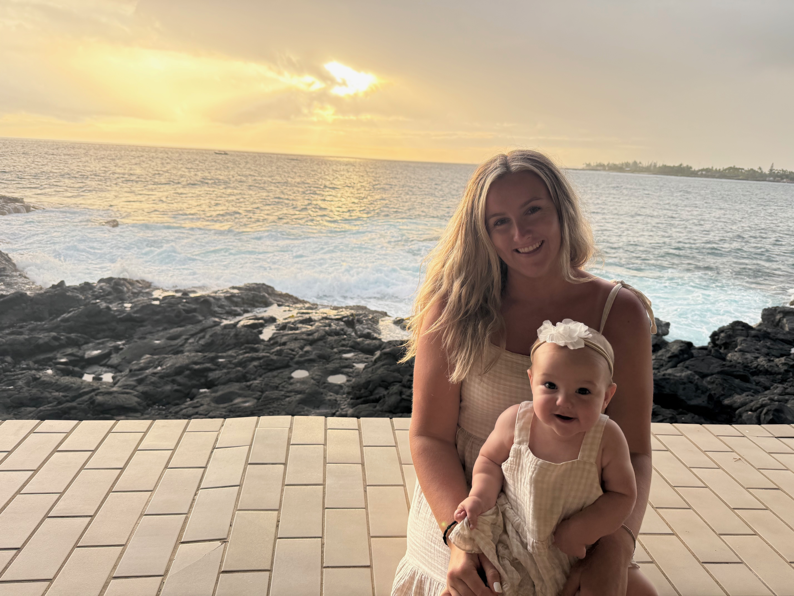

The Life of Remi Atkinson (Sidman)

This website is dedicated to my incredible wife Remi, & highlights the amazing life she has built as a devoted wife & mother, an intellectual & career driven woman, & an all around remarkable person who is loved by all that know her.